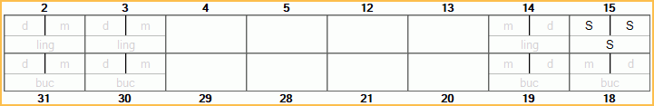

Sheet Screen Chart
Add Screen Charts to Screening sheets to mark tooth status or treatment needed when completing screenings.
In Edit Sheet Def, double-click a Screen Chart from the Fields list.

Chart Type: Select the tooth numbers of the selected Screen Chart.
- Primary Teeth: Mark all teeth in the selected Screen Chart as primary.
- Permanent Teeth: Mark all the teeth in the selected screen chart as permanent .
Delete: Delete the selected Screen Chart from the sheet.
OK: Close window and save changes.
Cancel: Close window without saving changes.
Adding a New Screen Chart
To a new Screen Chart, in Edit Sheet Def, click ScreenChart to automatically insert a new Screen Chart.
Screen Charts are Sheet Field Types that can be added when using the Screening Layout. There are two tooth charts available. Each chart shows posterior teeth and can be set to show permanent or primary teeth.
- If no screen charts are currently on the sheet, ChartSealantComplete will insert first.
- ChartSealantComplete: To mark sealants that are complete.
- If ChartSealantComplete is already on the sheet, ChartSealantTreatment chart will insert, and vice versa.
- ChartSealantTreatment: To mark current tooth status including treatment needed.
- Only two charts are allowed per sheet.
Using Screen Charts
Only sealants marked on permanent teeth will automatically add a matching procedure code to the patient's chart.
When using a custom screening form that has a tooth chart, users can click on a tooth or tooth surface to select a code that represents tooth status or needed treatment. There are six code options and they are described in the Code legend on the internal screening sheet:
- S = Seal
- PS = Previously Sealed/Intact
- C = Caries
- F = Filled
- NFE = Not Fully Erupted
- NN = Not Needed
- None = remove a previously marked code.
Teeth 2, 3, 14, 15, 31, 30, 19, and 18 allow a code per surface. Users can mark a single surface or all.
When sealant procedures are marked on permanent teeth, a matching sealant procedure (D1351) is added to the patient's chart. Status of the procedure (treatment planned or complete) depends on which tooth chart the code is marked on. Surface information will be associated with the procedure, but not sent with claims.
Below is what the tooth charts look like on generated custom screening form. 'S' indicates teeth or tooth surfaces where a sealant code has been marked.
